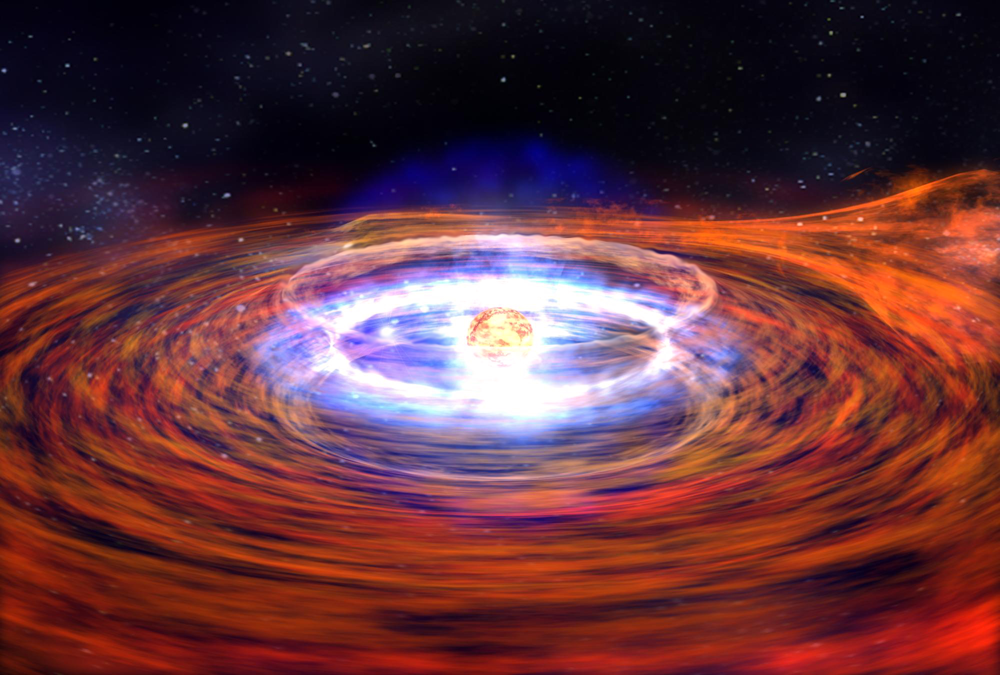

When the core of a massive star undergoes gravitational collapse at the end of its life, protons and electrons are literally scrunched together, leaving behind one of nature's most wondrous creations: a neutron star. Neutron stars cram roughly 1.3 to 2.5 solar masses into a city-sized sphere perhaps 20 kilometers (12 miles) across. Matter is packed so tightly that a sugar-cube-sized amount of material would weigh more than 1 billion tons, about the same as Mount Everest!
"With neutron stars, we're seeing a combination of strong gravity, powerful magnetic and electric fields, and high velocities. They are laboratories for extreme physics and conditions that we cannot reproduce here on Earth," says Large Area Telescope (LAT) science team member David Thompson of NASA's Goddard Space Flight Center in Greenbelt, Md.
Most known neutron stars belong to a subclass known as pulsars. These relatively young objects rotate extremely rapidly, with some spinning faster than a kitchen blender. They beam radio waves in narrow cones, which periodically sweep across Earth like lighthouse beacons. But as GLAST Project Scientist Steve Ritz of NASA Goddard points out, "With magnetic fields trillions of times stronger than Earth's, pulsar magnetic fields are high-energy particle accelerators." The magnetospheres of some pulsars accelerate particles to such high energies that they are relatively bright gamma-ray sources.
Astronomers have found less than 2,000 pulsars, yet there should be about a billion neutron stars in our Milky Way Galaxy. There are two reasons for this shortfall. One is age: most neutron stars are billions of years old, which means they have plenty of time to cool and spin down. Without much available energy to power emissions at various wavelengths, they have faded to near invisibility. But even many young pulsars are invisible to us with radio telescopes because of their narrow lighthouse beams. "Because pulsar beams are much broader in gamma rays, GLAST will allow us to detect some of the youngest, most energetic pulsars in our galaxy," says GLAST Interdisciplinary Scientist Stephen Thorsett of the University of California, Santa Cruz. "Getting a much more complete sample of the Milky Way's population of neutron stars is one of the most important ways that GLAST will advance our understanding of the life cycle of stars."
closeup of neutron star before explosionImage right: A neutron star is the dense, collapsed core of a massive star that exploded as a supernova. The neutron star contains about a Sun's worth of mass packed in a sphere the size of a large city. Credit: NASA/Dana Berry.